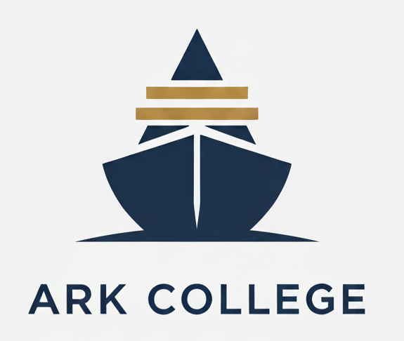

大学受験戦略コンサルティング
受験のその先へ。
1学年6人限定。
プロフェッショナル・ファームとしての
大学受験指導。
知識の量 × 処理速度
かつての高度経済成長期、均質で質の高い労働力を確保するためには「正解を速く正確に導き出す能力（偏差値）」が最適解でした。
知の活用 × 創造性
AIの台頭やVUCA時代。予測不可能な社会においては、知識をどう使い、誰と協働し、何を創り出すかが問われます。
もはや総合型選抜は「一芸入試」や「楽な入試」ではなく、最も現代社会のニーズに即した、知的な選抜方式へと進化しています。
――国際指標「Education 2030」が定義する、新しい学びの形――
世界的な教育指針「Education 2030」が掲げるのは、正解のない未来を自ら切り拓く力、「エージェンシー（当事者意識）」の育成です。AI時代、かつての暗記型学習は価値を失いました。今、入試や社会で評価されるのは、机上の空論ではなく「現実を動かす力」です。
Ark Collegeでは、この理念に基づき3つの次世代スキルを磨きます。
ネットに答えがある時代、価値を持つのは「問い」そのものです。常識を疑い、自分なりの視点で課題を見つける力は、志望理由書や研究の源泉となります。
「言わされた言葉」ではなく、社会と関わる実体験から学びます。失敗を恐れず挑戦する「本物の経験」こそが、面接官の心を動かす唯一無二の言葉を生みます。
一人で完結せず、多様な他者と対話して新たな価値を創る力です。このスキルは、グループディスカッションや入学後のプロジェクト学習で決定的な差となります。
総合型選抜対策は、一生モノの「武器」を手に入れる訓練です。
大学合格を通過点とし、その先の人生を自力で輝かせ続ける力を、共に育みましょう。
推薦・総合型での入学者
(令和5年度)
慶應SFCは「未来創造と解決案」、早稲田は「学部ごとの独自性」、上智は「他者貢献と国際性」が鍵。高いビジョンが求められる。
立教は「リーダーシップ」、中央は「論理的思考力」、青学は「特技の学問的昇華」。大学のカラーとの合致度が重要。
共通テスト8割を前提とした「研究者としての素養」。アカデミックな探究心と基礎学力の両立が必須要件。
インプットと自己分析
興味分野の読書、評定維持、課外活動への参加。「自分が何に夢中になれるか」を探す期間。
ストーリー構築
「なぜその大学か？」を徹底的に問う。過去と未来を接続し、必然性のある志望理由の骨子を作る。
言語化と推敲
志望理由書の作成。20回以上の書き直しが標準。第三者の視点を入れ、論理の穴を塞ぐ。
アウトプット特訓
小論文、プレゼンテーション、面接対策。想定問答を超えた「対話力」を磨く。
総合型選抜専門・完全オンライン私塾
総合型選抜は、単なる「作文コンクール」ではありません。大学のアドミッション・ポリシーを深く読み解き、あなたの過去・現在・未来というポテンシャルと合致させる、極めて高度なマッチング戦略が必要です。
Ark Collegeは、大量生産型の塾ではありません。「どうしても合格したい」と願うご家庭のためだけに存在する、少数精鋭のプロフェッショナル・ファームです。
生徒のポテンシャル×志望校特性。「合格可能性を極限まで高める併願戦略」と「評価されるストーリー設計」をプロが立案します。
バイト講師ゼロ。代表講師が直接設計。画一的なテキストではなく、志望校・能力・性格に合わせた完全オーダーメイドです。
24時間365日対応。Slackで原則48時間以内に返信。深夜でも早朝でも、受験生の不安を即座に受け止めます。
大学合格は通過点。社会で活躍するためのOS（基本能力）を書き換えます。
感情論ではなく、事実と根拠に基づき矛盾なく筋道を立てるロジカル・シンキングを養います。
Google検索に留まらず、論文や一次情報を当たり、信頼性の高い情報を掴み取るリサーチ力です。
読み手の解釈に依存しない、明快かつ説得力のあるアカデミック・ライティングを習得します。
自身の原体験や価値観をメタ認知し、「自分が何者で、何を成したいか」を言語化する力です。
膨大な出願書類と学業を両立させるための、タスク管理・スケジュール管理能力を磨きます。
面接や口頭試問において、相手の心を動かし、共感を得るための「伝える技術」です。
コース・料金のご案内
月額制のスタンダードコース
月4回のセッションで、学習ロードマップ作成から小論文・活動実績・面接指導を生徒一人ひとりに合わせてご提供します。
月極ではなくパッケージ制にて3コースをご用意。
志望校合格に向けて必要なサポート（戦略・書類・面接・小論文）を全て提供します。
| 単願完遂コース |
RECOMMENDED
難関大コース
|
最難関大コース | |
|---|---|---|---|
| 志望校ライン | 希望による (GMARCH、関関同立 等) |
国公立、早慶上智、 ICU 等 |
医学部、旧帝大、 慶應FIT 等 |
| 対策校数 | 1校 | 3校 | 5校 |
| 対策詳細 | 第一志望 1校 （計1校 or 1学部） |
第一志望 ＋ 併願 （計3校 or 3学部） |
第一志望 ＋ 併願 （計5校 or 5学部） |
| セッション(50分) | 全30回 +添削無制限 |
全40回 +添削無制限 |
全50回 +添削無制限 |
| パッケージ 金額(税込) |
¥770,000 | ¥990,000 | ¥1,210,000 |
| 月換算目安 | 約8.5万円 | 約9.8万円 | 約13.4万円 |
原則、パッケージ内で完結しますが、さらに手厚い指導を希望される方向けです。
【クーリング・オフ】 契約締結後8日間は無条件で解除可能です。
【中途解約】 高3パッケージコースの場合、「初期導入費用（コースにより22〜33万円）」を除いた「指導運営費」の未消化分から、所定の解約違約金を差し引いた金額を返金いたします。
当塾の指導は合格を保証するものではありません。合格には、戦略に基づく生徒ご本人の圧倒的な実行量（リサーチ・執筆・練習）が不可欠であることを予めご了承ください。また、代筆行為等は固くお断りしております。
徹底的な個別最適化指導を行うため、1学年6名を限度として入塾審査を実施させていただきます。。
塾としてサポートさせていただく上で、生徒様との粘り強い対話が重要であると考えております。
よって、当塾での指導が生徒様にとって最適であると判断させていただいた方のみ入塾のご案内をさせていただきます。
資格や活動実績・評定平均・通学中の学校・居住地等は審査の対象とはなりません。
それよりも、考え抜く力や探究心の強さ、特定の物事への情熱やユニークな考え方など、ポテンシャルを当塾にて責任を持って伸ばすことができるかどうかで、判断させていただきます。
無料コンサルティングにて、皆様とお話しできますことを楽しみにしております。
Ark College 代表講師
慶應義塾大学法学部法律学科を卒業。その後、会社勤務を経て欧州の大学院へ留学。
慶應義塾大学法学部FIT入試A・B両方式で現役ダブル合格した経験をもとに、総合型選抜の指導分野に参画。大手総合型選抜塾「洋々」では4年間にわたりメンター講師として在籍し、多数の難関大学合格者を輩出。また、新規総合型選抜塾の立ち上げにおいては事業責任者を務め、指導ノウハウの体系化と組織運営を統括した。
さらに、大手外資系企業でマーケターとして勤務。市場分析、戦略立案、高い論理的思考力を実務を通じて培う。
これまでに31大学・50名以上の生徒を担当し、合格実績は国公立から早慶上智ICU、関関同立など多岐にわたる。
一橋大学、お茶の水女子大学、筑波大学、横浜国立大学、香川大学、福島大学、慶應義塾大学、早稲田大学、国際基督教大学(ICU)、上智大学、明治大学、青山学院大学、立教大学、同志社大学、中央大学、法政大学、学習院大学、関西学院大学、立命館大学、関西大学、成蹊大学、明治学院大学、日本女子大学、東洋大学、近畿大学、東京女子大学、南山大学、APU(立命館アジア太平洋大学)、明星大学、帝京大学、城西大学 など
あなたの現状と志望校をお聞かせください。
合格までの戦略的なロードマップを提示いたします。